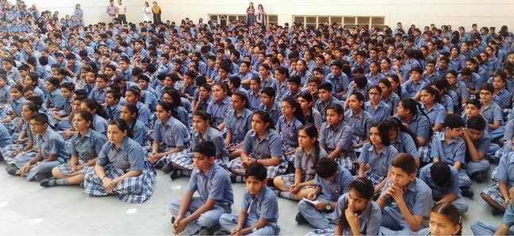
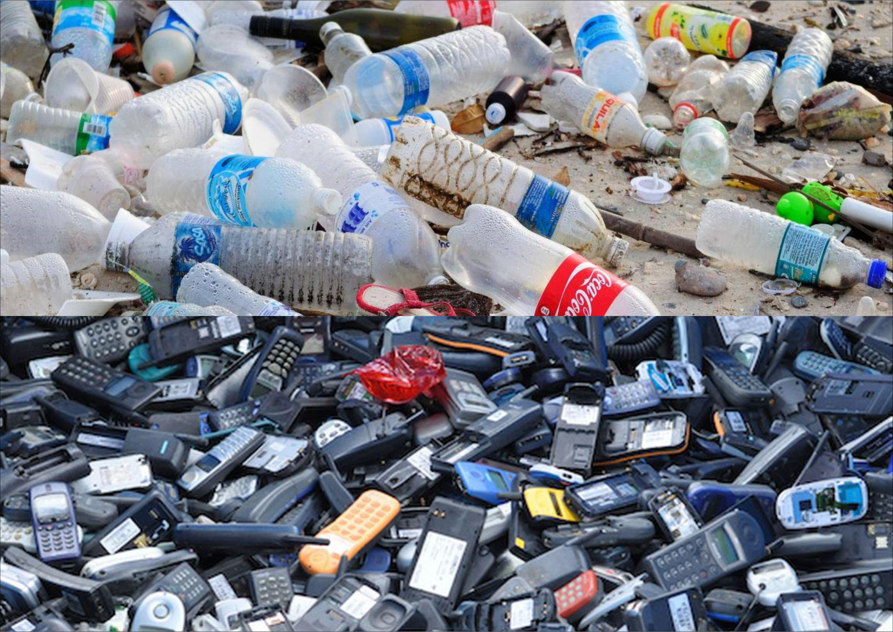
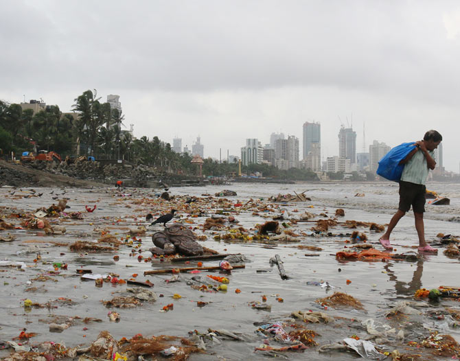
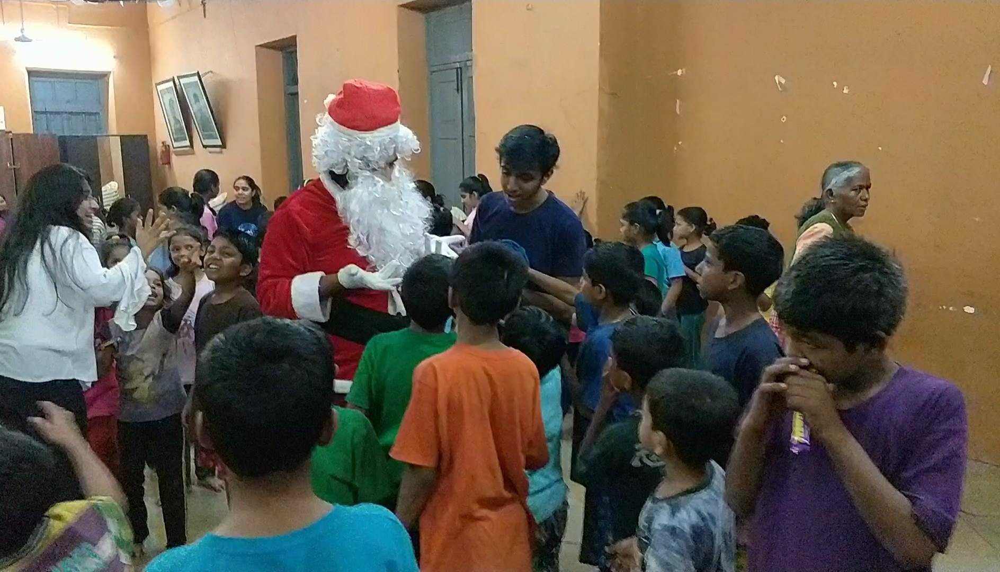

The social initiative of K.J. Somaiya College of engineering, named Parvaah, works each year with a purpose of providing to the underprivileged and oppressed.
This time around, Parvaah is on a mission to establish a “Zero Waste Community,”
wherein constant efforts are being made for reducing, reusing and recycling the waste generated and contributing back to the society.
SCHOOL AWARENESS CAMPAIGN

It is said ‘The students of today are the future of tomorrow’. Realising this, Parvaah plans on visiting schools in Mumbai and teach the students the basic principles of a zero waste community. It’s an attempt to educate the students as well as the staff of the school about the need to go zero waste. Along with this, we also aim at transforming the schools into a zero waste locality. Instilling a sense of responsibility in the students towards managing their waste will go a long way in realising our goal of a cleaner Mumbai.
PLASTIC & E-COLLECTION DRIVE
Keeping in mind the perils caused by plastic and e-waste, Parvaah has decided to conduct a collection drive for these hazardous items. The plastic and e-waste which is collected will then be sent for recycling thus ensuring there is no harm caused towards the environment. E-waste contains heavy metals like cadmium, lead, copper, and chromium that can contaminate the environment while plastic, on the other hand, is made from toxic compounds known to cause illness, and because it is meant for durability, it is not biodegradable. Constituting a major chunk of our waste, a proper and efficient disposal of these items is the need of the hour.

GANPATI VISARJAN CLEAN-UP

The festive season of Ganesh Chaturthi is one which is celebrated with great pride and enthusiasm all across the state. But what follows at the end of 11 days is a beach replete of floral waste and half-broken idols. To overcome this, Parvaah has decided to organize a beach clean-up at the Girgaum Chowpatty on the day after Ganesh Visarjan to clear up the beach of all its waste. We plan on associating with other college students from that area and make this a ground-breaking youth moment. Similarly, we would also be spreading awareness about celebrating an eco-friendly Ganesh Utsav in the weeks leading to the festival.
SIGNAL SHALA
Signal Shala is an innovative concept initialized by Samarth Bharat Vyaspith along with Thane Municipal Corporation, to provide education to underprivileged children living on signals in Thane. Situated in a small container below a bridge, the main aim of Signal Shala is to make these kids capable of adjusting themselves with the mainstream world. We at Parvaah plan on spreading awareness about Zero Waste with the help of these kids and also teach them simple ways to treat their waste. As signals witness a frequent number of vehicles, we aim to use this medium to make the people aware of the basic habits they can follow to effectively manage their waste. We at Parvaah believe that only when it is a collective effort of all its citizens can a city truly make great progress in achieving a goal.

SECRET SANTA

On the occasion of Christmas, Parvaah plans on visiting an orphanage and celebrate with the kids. To further the joy, we would also be distributing toys, goodies, and sweets among the kids. This would be followed by playing games with the children, interacting with them and ensuring that everyone has a smile on his or her face.
PARVAAH MARATHON
Parvaah plans to organize a marathon to raise awareness about waste crisis. The marathon is proposed to take place in the Ghatkopar area of suburban Mumbai. We would also be starting a fundraiser event through this marathon.

Follow us on

Developed by: KJSCE Web Development Team